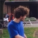

VAKKEN
REK/NED/ENG
Dit zijn die generieke vakken die belangrijk zijn voor je diploma
WIN
Hier leer je programmeren voor windows, bijvoorbeeld in python en C#
WEB
Hier leer je hoe je websites moet maken, bijvoorbeeld in PHP en html
PRO
Hier leer je wat je allemaal doet voor en
na het programmeren
PRA
Hier ga je zelfstandig aan de slag met verschilende opdrachten
SLB
Bespreking over aantal zaken over de opleiding
ROOSTER
INDELING BLOKKEN
Je hebt in totaal 7 blokken van een halfjaar namelijk blok A t/m blok G.

VERSNELLEN
Met het versnellende traject bedoelen we dat je de opleiding in 3 jaar kan doen ipv van 4 jaar. Dat kan alleen als je goed gepresteerd hebt in blok A. De versnellers slaan blok E over. Maar als je in de versnellings klas zit en het gaat minder goed met je prestaties kom je weer terug bij de normale 4de jaars traject.
DOCENTEN

Bart Roos

Steven van Rosendaal
Elton Boekhoudt

Wicher Hulzebosch
Ine Vermeer

Michel Meeuwesen